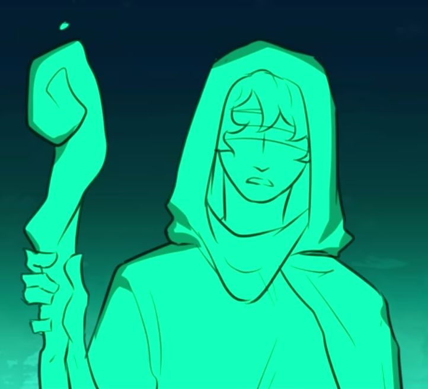

| Tiresias | |
|---|---|
|  | |
| Zeichnung von Ximena Natzel | |
| Biografie | |
| Titel | Der blinde Seher |
| Beruf | Seher |
| Prophet | |
| Orakel | |
| Zugehörigkeit | Apollon |
| Status | Tot |
| Hinter den Kulissen | |
| Auftritte | Kirke Saga (erwähnt) |
| Unterwelt Saga | |
| Original Stimme | Mason Olshavsky |
| Deutsche Stimme | Rolle offen |
Tiresias
Ich weiß genau, wie die Reise gelingt. Und auch, dass es dir nichts bringt. - Tiresias (Nicht mehr du)
Tiresias ist der blinde Prophet von Apollon, der seine Prophezeiungen durch Visionen erlangt.
Biografie
Tiresias wird erstmals in der Kirke Saga erwähnt, als
Kirke Odysseus mitteilt, dass sie ihn nicht nach Hause
schicken kann, sondern in das Land der Toten, wo Tiresias wohnt.
In der Unterwelt Saga gibt Tiresias sein Debüt mit dem Song
Nicht mehr du, in dem er Odysseus vage die kommenden Ereignisse
beschreibt. Er teilt Odysseus mit, dass es ein anderes Universum gibt, in dem er ihnen bei der Rückkehr hilft,
aber nicht dieses, und spricht dann von den Tragödien, die der Crew und Odysseus widerfahren werden - was
schließlich zum Bruch mit Odysseus' bisheriger Moral führt, der schwört, sich in ein Monster zu verwandeln
und damit Tiresias' Prophezeiung zu erfüllen (. ... Ein Mann, der irgendwann nach Hause kann, doch das bist
nicht mehr du, was sich auf Odysseus' Verwandlung vom Menschen zum Monster bezieht), obwohl die Theorie
besagt, dass der Moment, den Tiresias sah und der Odysseus in ein Monster verwandelte,
Sechs-Hundert Schlag war, da Tiresias' Motiv am Ende gefunden
wird.
In der Weisheits Saga hat er einen kurzen Auftritt während
Athenes Zeit Sprung.
Auftritte
-
Kirke Saga
- Man kann doch auch anders (erwähnt)
-
Unterwelt Saga
- Nicht mehr du (Debüt)
-
Weisheits Saga
- Liebe im Paradies (Ausschnitt aus Nicht mehr du)